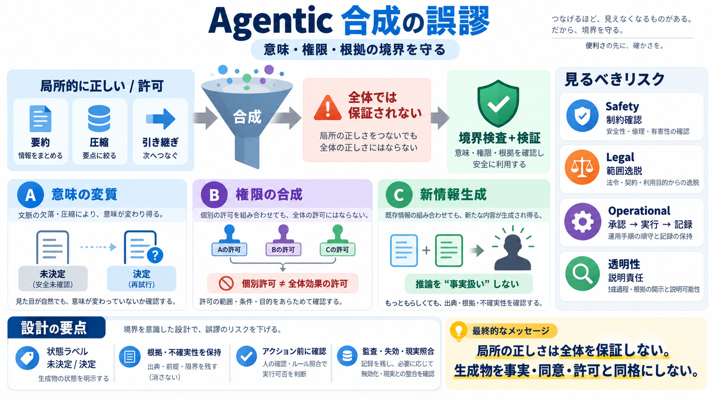

LaMAS 2026@AAAI'26
LaMAS 2026 focuses on the emerging field of multi-agent systems powered by LLMs. As interest in using multiple LLM agent…

エージェント環境では、要約・圧縮・引き継ぎによって「局所的に正しい／許可された」ものが、全体では正しくない形で伝播します。
合成とは文章の再表現に見えても、意味・方針・権限・前提まで変えてしまう可能性があります（単なる圧縮ではない）。
「局所の正しさ／許可」が「合成後の正しさ／許可」を保証しません。著者はこれを“合成の誤謬”として束ねます。
エージェントは、出力を次の記憶・計画・実行の前提として引き継ぎます。そのため境界のすり替えは、単発の誤りより増幅されます。
問題は主に(1)意味の変質、(2)権限の合成、(3)新しい情報の生成として現れます。
「安全性は未確認」を要約・圧縮すると、「再試行する」という状態遷移（未決定→実行）に変換され得ます。
ベンダー変更や口座間移動が個別に許可されていても、「購入取引の組」全体は許可されない場合があります。
インタビューと行動ログが個別に閲覧許可されていても、それらを結合して人物像のような追加推論を“許可済み”として扱うと境界が侵食されます。
危険なのは新しい推論を作ること自体ではなく、「作られた推論・決定・権限」を最初から事実／合意／許可済みと扱う運用です。
対策は「要約をやめる」ことではなく、意味・根拠・不確実性・制約のラベルと、アクション前の検証手順を維持することです。
同じ構造でも、何が損なわれるかで設計要求が変わります。ここではSafety/Legal/Operationalなどの視点で整理します。
著者自身が、選ばれた投稿の可能性や分類の網羅性不足を示し、主張の一般化の強さには注意が必要だと述べています。
Agenticでは、要約・合成・引き継ぎが「意味・根拠・権限」を変形し得ます。最終的な安全・適法性を守る鍵は、作られた推論を“確定扱い”しない境界設計と検証です。
LaMAS 2026 focuses on the emerging field of multi-agent systems powered by LLMs. As interest in using multiple LLM agent…
KR2026Proceedings of the 23rd International Conference on Principles of Knowledge Representation and ReasoningProceeding…
systems this might not be a big problem, but for systems that are designed to achieve certain predefined goals or target…
These two ideas intersect when LLM-powered agents are placed inside a multi-agent architecture. Multi-agent systems prov…
## What are Multi-Agent Systems? A Multi-Agent System (MAS) is a system composed of multiple intelligent agents that in…